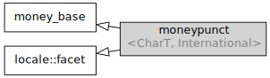

std::moneypunct
From cppreference.com
| Defined in header <locale>
|
||
| template< class CharT, bool International = false > class moneypunct; |
||
The facet std::moneypunct encapsulates monetary value format preferences. Stream I/O manipulators std::get_money and std::put_money use std::moneypunct through std::money_get and std::money_put for parsing monetary value input and formatting monetary value output.

Inheritance diagram
Four standalone (locale-independent) specializations are provided by the standard library:
| Defined in header
<locale> | |
| std::moneypunct<char> | provides equivalents of the "C" locale preferences |
| std::moneypunct<wchar_t> | provides wide character equivalents of the "C" locale preferences |
| std::moneypunct<char, true> | provides equivalents of the "C" locale preferences, with international currency symbols |
| std::moneypunct<wchar_t, true> | provides wide character equivalents of the "C" locale preferences, with international currency symbols |
In addition, every locale object constructed in a C++ program implements its own (locale-specific) versions of these specializations.
Contents[hide] |
[edit] Member types
| Member type | Definition |
char_type
|
CharT
|
string_type
|
std::basic_string<CharT> |
[edit] Member functions
| constructs a new moneypunct facet (public member function) | |
| destructs a moneypunct facet (protected member function) | |
invokes do_decimal_point (public member function) | |
invokes do_thousands_sep (public member function) | |
invokes do_grouping (public member function) | |
invokes do_curr_symbol (public member function) | |
invokes do_positive_sign or do_negative_sign (public member function) | |
invokes do_frac_digits (public member function) | |
invokes do_pos_format/do_neg_format (public member function) |
[edit] Protected member functions
| [virtual] |
provides the character to use as decimal point (virtual protected member function) |
| [virtual] |
provides the character to use as thousands separator (virtual protected member function) |
| [virtual] |
provides the numbers of digits between each pair of thousands separators (virtual protected member function) |
| [virtual] |
provides the string to use as the currency identifier (virtual protected member function) |
| [virtual] |
provides the string to indicate a positive or negative value (virtual protected member function) |
| [virtual] |
provides the number of digits to display after the decimal point (virtual protected member function) |
| [virtual] |
provides the formatting pattern for currency values (virtual protected member function) |
[edit] Member constants
| Member | Definition |
const bool intl (static)
|
International
|
[edit] Member objects
| static std::locale::id id |
id of the locale (public member object) |
Inherited from std::money_base
| Member type | Definition |
| enum part { none, space, symbol, sign, value }; | unscoped enumeration type |
| struct pattern { char field[4]; }; | the monetary format type |
| Enumeration constant | Definition |
none
|
whitespace is permitted but not required except in the last position, where whitespace is not permitted |
space
|
one or more whitespace characters are required |
symbol
|
the sequence of characters returned by moneypunct::curr_symbol is required |
sign
|
the first of the characters returned by moneypunct::positive_sign or moneypunct::negative_sign is required |
value
|
the absolute numeric monetary value is required |
[edit] See also
| defines monetary formatting patterns (class) | |
| represents the system-supplied std::moneypunct for the named locale (class template) | |
| parses and constructs a monetary value from an input character sequence (class template) | |
| formats a monetary value for output as a character sequence (class template) |